Kray’s Portfolio
About
Portfolio
Categories
All
(17)
cartography
(4)
data visualization
(4)
programming
(9)
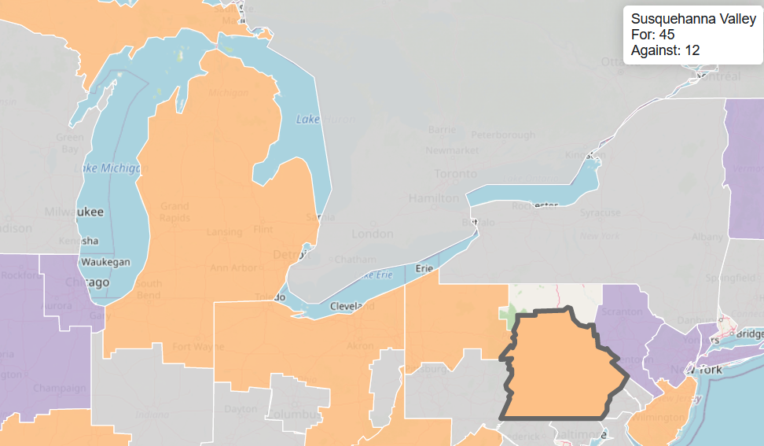
Tracking the PCA’s Amendments (GA 49)
data visualization
Every year, the Presbyterian Church in America (PCA) meets at what is called a “General Assembly”. Overtures (amendments) are submitted and voted on. If an amendment gets a majority of “Yeas”, then it goes to be voted on by…
Jan 16, 2023
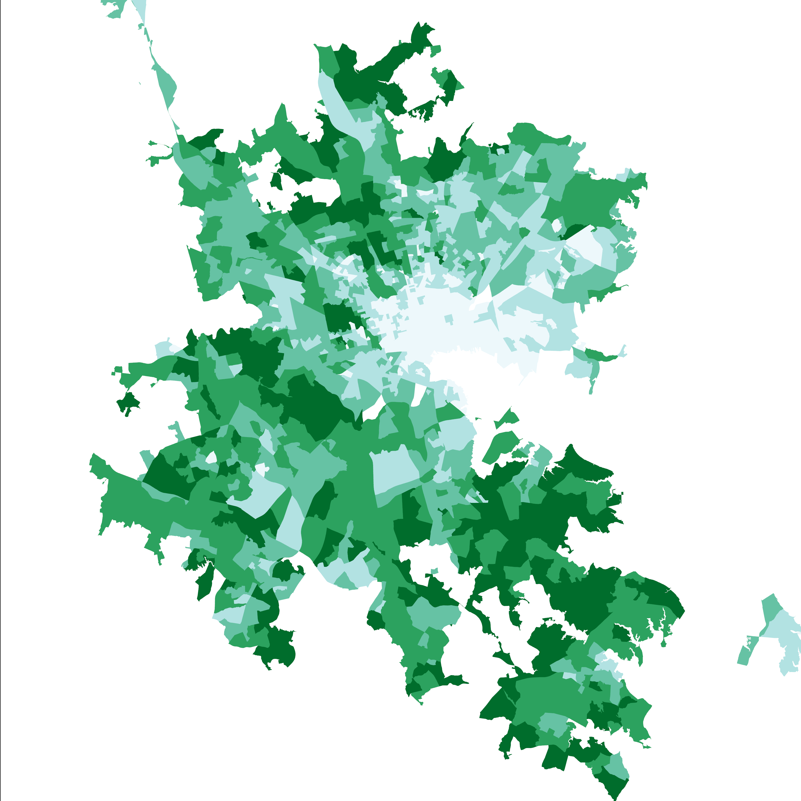
Benefits of Urban Tree Cover
data visualization
This project uses data from American Forests and explores the correlation between certain health metrics and tree cover in a given census tract.
Jan 16, 2023
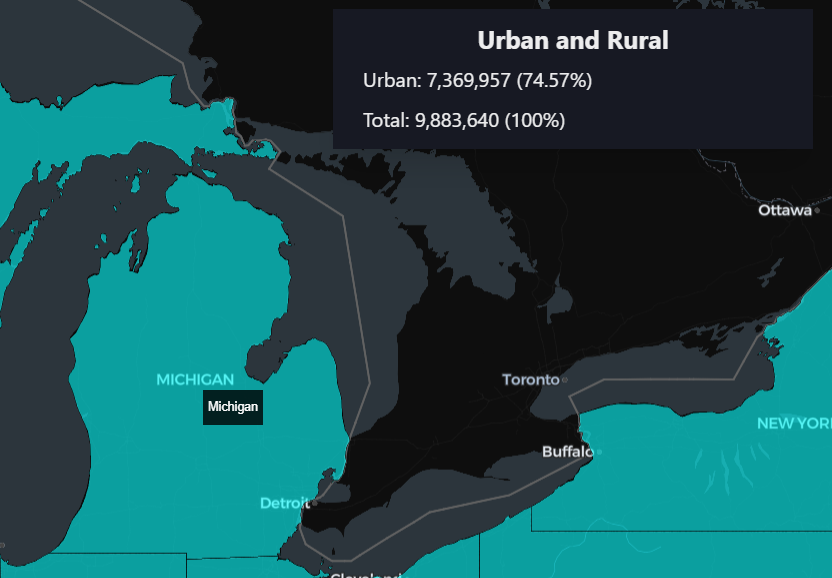
Census Find
programming
This application, Census Find, intends to make access to census data both accessible and reproducible. While there are other tools out there that aim to accomplish this, I…
Dec 14, 2022
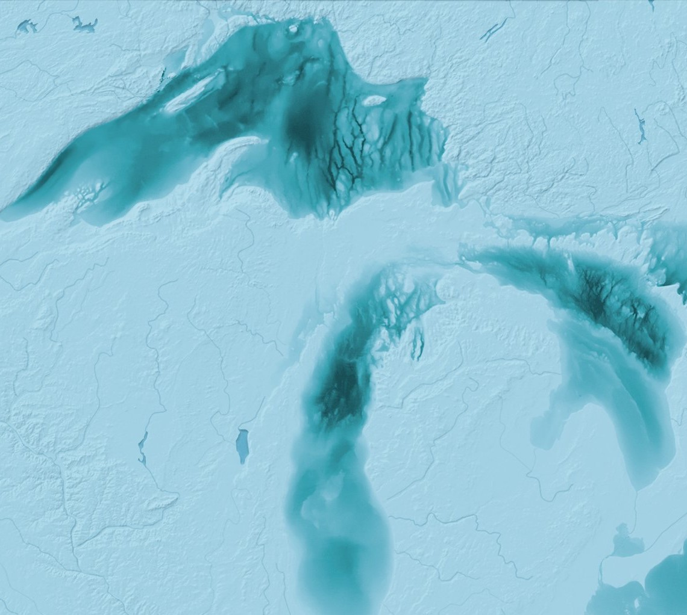
Map Challenge 2021 & 2022
cartography
I have been meaning to compile these maps for a while, so here is a compilation of my maps for the #30DayMapChallenge (years 2021 and 2022).
Dec 1, 2022
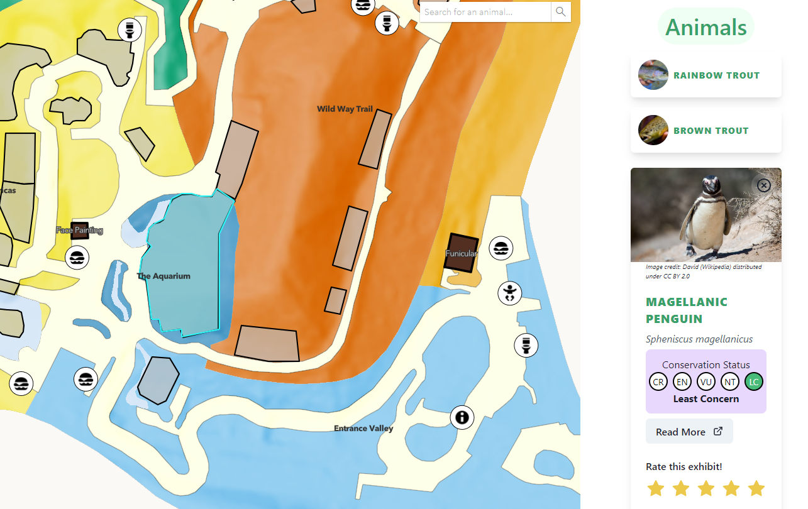
John Ball Zoo Explorer
programming
The goal of this project was to create a mobile-friendly web application that showcased a park, real or fictitious. I chose to use John Ball Zoo in Grand Rapids, MI.
Apr 27, 2022
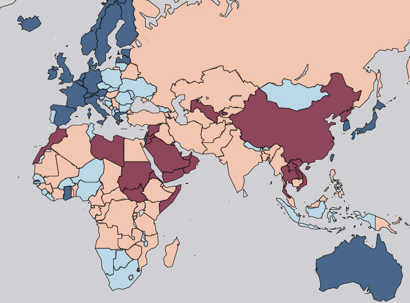
Varieties of Democracy
programming
See the project here. ## Overview The Varieties of Democracy (V-Dem) is an attempt to measure and conceptualize…
Mar 22, 2022
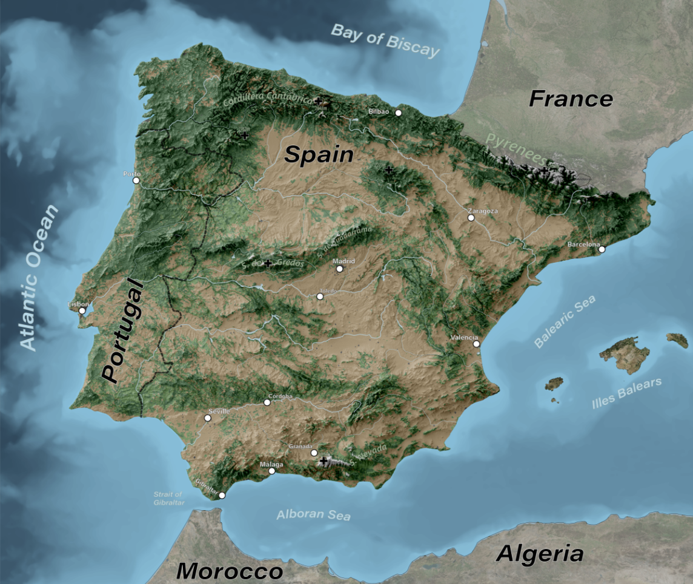
The Tour de Iberia
cartography
This is my attempt at creating a fictional bike route, akin to the Tour de France.…
May 9, 2021
Tanaka Contours on Mars
cartography
Tanaka contours, also known as illuminated contours, are a unique way of…
Apr 26, 2021
Mapping Gondor and Mordor
cartography
Robert Rose of William & Mary posted a very interesting analysis of an optimal route from the Shire to Mt. Doom. Thankfully, he also posted the data behind the analysis, which included some great…
Apr 16, 2021
Visualizing Democratic Backsliding
data visualization
Very short write-up here. This was created with data from the V-Dem institute, and was inspired by their article on toxic polarization and democratic backsliding.
Feb 22, 2021
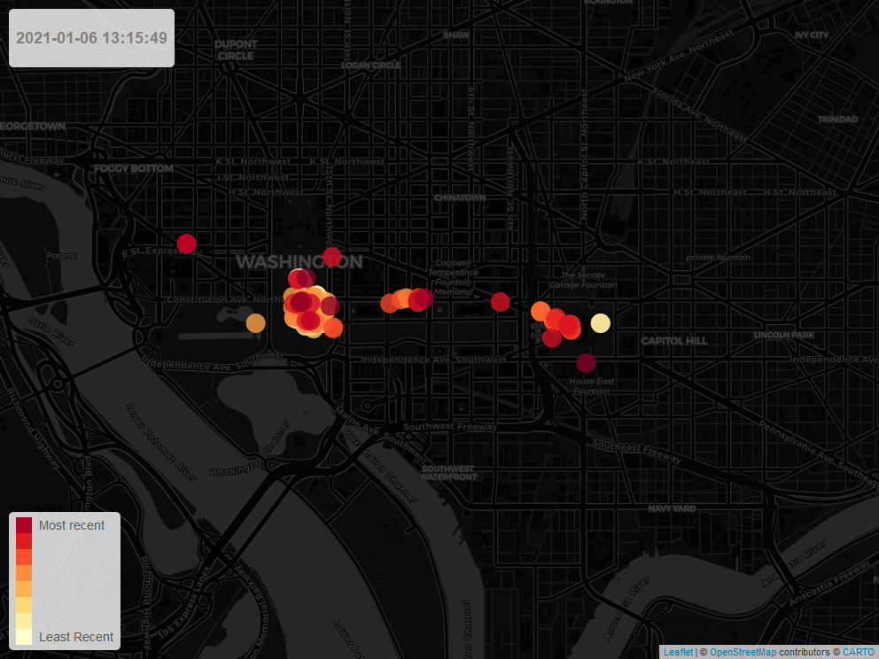
Visualizing the Riot on the Capitol
data visualization
In the aftermath of the attempted insurrection, Parler…
Jan 15, 2021
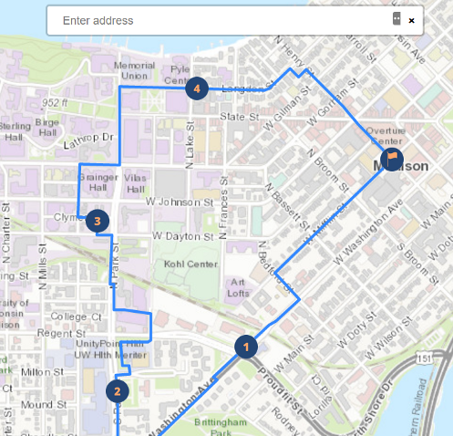
Generating Running Loops with Graph Theory
programming
Due to Heroku ending their free-tier, this website is no longer live. I hope to find another host for this website.
Dec 10, 2020
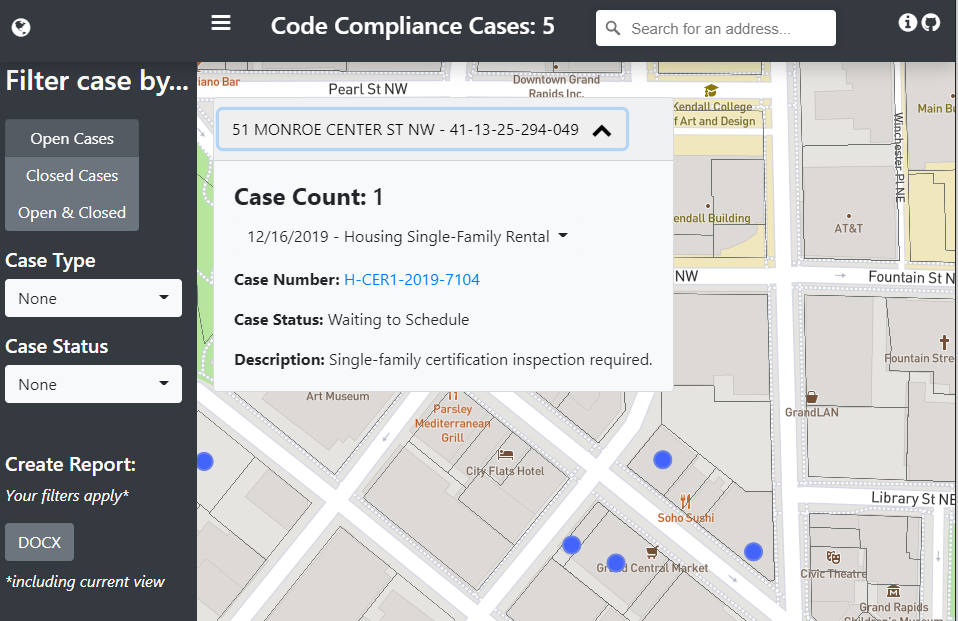
Mapping Code Violations in Grand Rapids
programming
Due to Heroku ending their free-tier, this website is no longer live. I hope to find another host for this website.
Sep 4, 2020
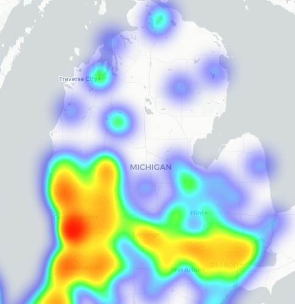
Demographic Analysis with Python
programming
The goal of this project is to analyze the demographics of donors to a non-profit in West Michigan with Python. Demographic data was acquired from the U.S. Census Bureau’s American Fact…
Apr 26, 2018
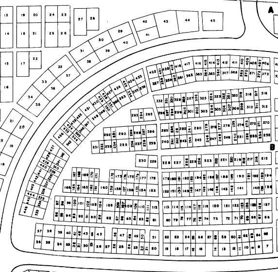
City of Grand Rapids Cemeteries
programming
The purpose of this project was to allow any citizen to view cemeteries online so that they can search for occupants in any of Grand Rapids’ six cemeteries. This project was based on four phases…
Apr 12, 2018
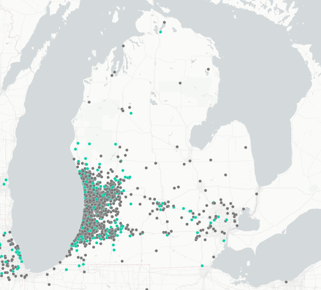
Geocoding with Python
programming
The goal of this project was to map out the donors of a nonprofit in West Michigan. The CSV of…
Mar 2, 2018
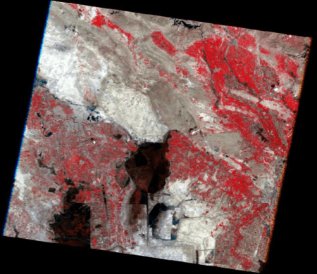
Mesopotamian Marshes
programming
For millennia, the marshes in Mesopotamia — located by Iraq and Iran — boasted a rich culture of Marsh Arabs and a diverse ecosystem. Enter Saddam Hussein: after the…
Jan 24, 2018
No matching items